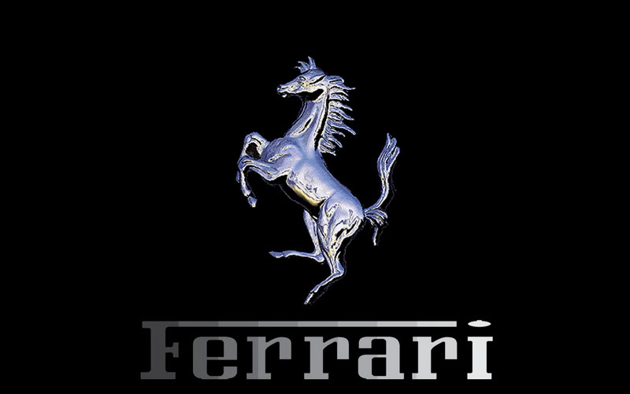
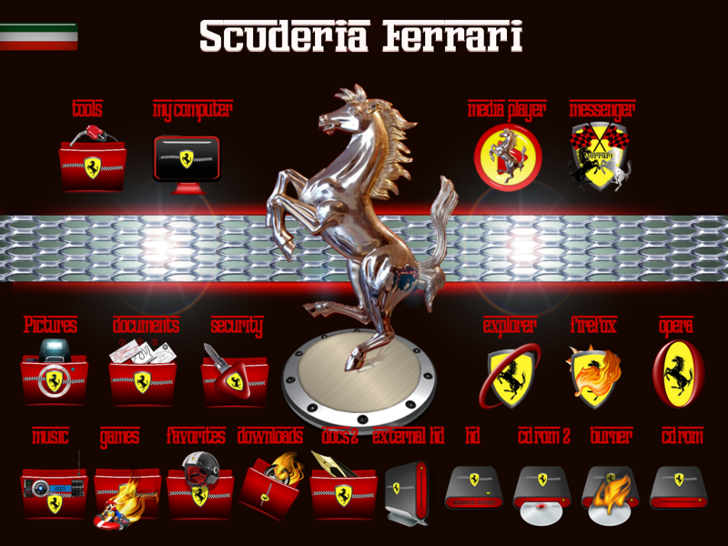

Ferrari
Autor:Gustavo Cruz Vaquero
¿Quienes Somos?
Aquí podrás comprar los artículos que deseas de modo totalmente simple y rápido directamente a tu casa. Nuestro servicio de paquetería se encargará de entregarte la mercancía en la dirección indicada.
Misión
AMD produce circuitos integrados y suministra productos programables conjuntamente con soluciones de aplicación a fabricantes de equipos de informática personal y en red y de comunicaciones.
Para alcanzar el éxito, AMD combina conceptos innovadores con el liderazgo en la tecnología de procesos y la excelencia en el diseño y la fabricación a fin de ofrecer productos y servicios que abaratan los costes, mejoran el rendimiento y reducen el tiempo de comercialización de nuestros clientes de todo el mundo.
Visión
En AMD compartimos la visión de un mundo mejor gracias a la informática, que libera la mente y el espíritu humanos.
AMD es un fabricante líder en tecnologías esenciales para la era de la informática. Junto con nuestros clientes, proporcionamos a las personas de todo el mundo la capacidad de llevar una vida más productiva en todo lo que respeta a la creación, el procesamiento y la comunicación de información y conocimientos. Somos el proveedor de circuitos integrados favorito de nuestros clientes.
Valores
• Ética: Somos conscientes del hecho de que formamos parte de una realidad única, conocida y respetada en todo el mundo y tenemos el compromiso de representarla en nuestras relaciones, manteniendo un comportamiento discreto, honesto, coherente y correcto.
• Iniciativa: La gente en Ferrari piensa y actúa como si la Compañía fuera suya, buscando nuevas responsabilidades, estableciendo ellos mismos ambiciosos e innovadores objetivos profesionales y anticipando, por tanto, los cambios dirigidos a la mejora continua.
• Excelencia: La gente en Ferrari aplica el concepto de excelencia a su forma de pensar, de planificar, de actuar y de llevar a cabo sus tareas, sin estar nunca suficientemente satisfechos de los resultados alcanzados, buscando en cada actividad técnica o de gestión la solución con el más alto nivel de calidad, para garantizar a todos los clientes la excelencia en los productos y servicios.
• Orgullo de pertenencia: La gente en Ferrari está orgullosa de formar parte de una realidad única e irrepetible y de contribuir personalmente a renovar la leyenda de la tradición Ferrara, anticipando, logrando y excediendo los deseos, expectativas y emociones de nuestros clientes.
• Cuidar el Medio Ambiente: Queremos mejorar el ambiente de trabajo, garantizando las mejores condiciones en términos de habitabilidad, confort, orden y limpieza, para trabajar en un entorno seguro y saludable, donde los altos estándares de calidad están garantizados para todas las personas que trabajan en la Compañía.
• Rentabilidad: La gente en Ferrara planifica, consigue y saca el máximo provecho de las inversiones en recursos, estructuras y tecnología en beneficio de la Compañía, los socios y todos los colaboradores a medio y largo plazo, para garantizar el desarrollo y la productividad.

Ferrari
Ferrari
servicios
El departamento Ferrari Classiche se ha creado pensando en los propietarios de Ferrari clásicos, para ofrecerles servicios de restauración y mantenimiento, asistencia técnica y Certificación de Autenticidad.
El departamento Ferrari Classiche ha sido creado específicamente para ofrecer a los propietarios de vehículos clásicos Ferrari servicios de restauración y de mantenimiento, Certificaciones de autenticidad y Documentos Comprobantes para vehículos de interés histórico. Las oficinas y el taller de Ferrari Classiche se encuentran en la antigua fundición Ferrari y ocupan un área de 950 metros cuadrados dentro de la fábrica de Maranello. Ferrari Classiche fue inaugurado oficialmente por el Presidente Luca di Montezemolo en julio de 2006.
productos
Ferrari ofrece a sus clientes una amplia gama de productos para el uso y mantenimiento de sus coches. Servicios de financiación, el importante centro de asistencia y restauración para vehículos históricos y diferentes opciones de seguro son sólo algunas de las ofertas por las que puedes preguntar en tu concesionario.

Ferrari
Consulteria
Como Consultor Independiente me dedico a asesorar y a asistir a emprendedores, dueños, socios y directivos de Pymes para que puedan liderar efectivamente sus empresas, teniendo en cuenta todos los aspectos organizacionales, comunicacionales y humanos involucrados.
"Mi objetivo es que cada cliente pueda transformarse en una empresa exitosa con posibilidades de crecer estratégicamente"
Ferrari
Contactanos
Domicilio:constitucion #1
Telefono:2431142076
Correo:gu1997hy@hotmail.com
Autor:Gustavo Cruz Vaquero
Equipo
Nombre:Gustavo Cruz Vaquero
Edad:16 años
Nombre de la empresa:Ferrari
Nombre de la escuela:cbtis184
Grupo:4°"E"